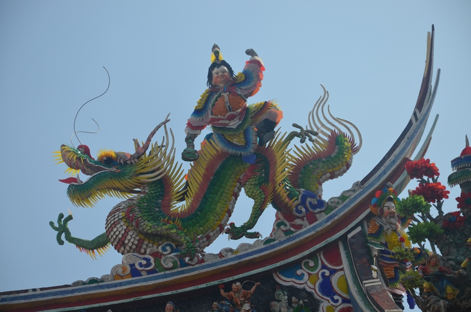
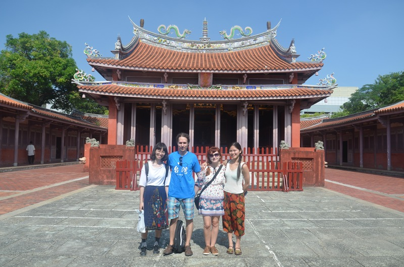
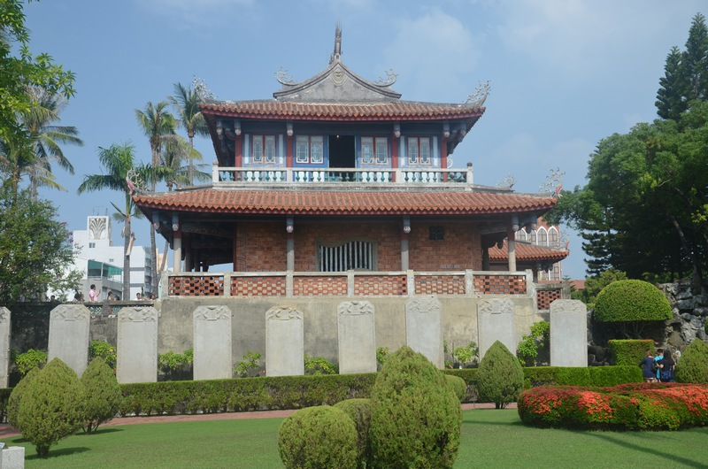
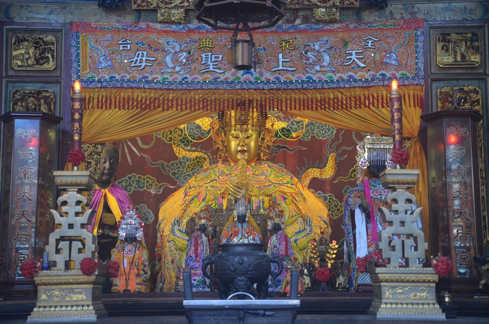
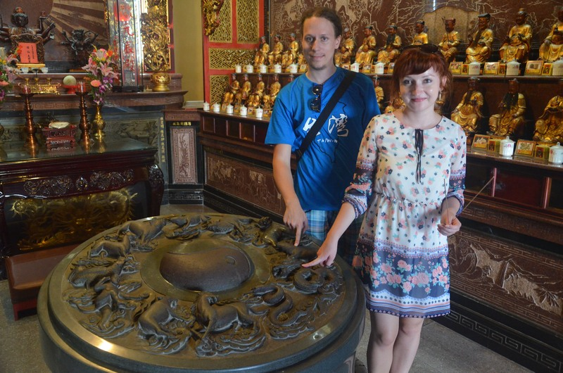
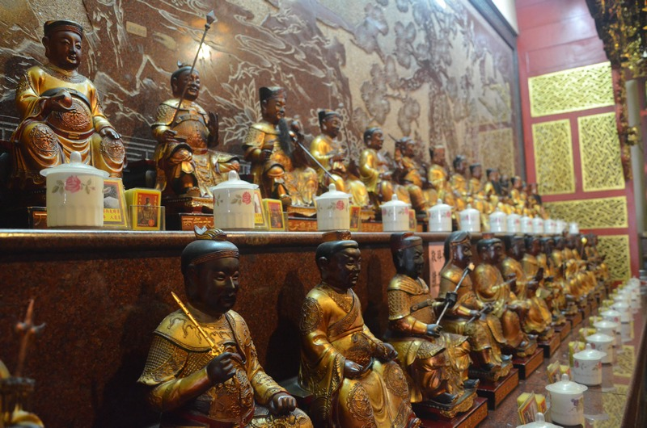
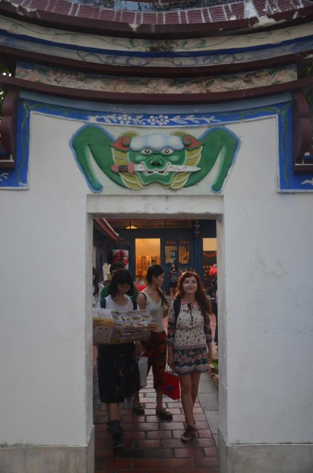
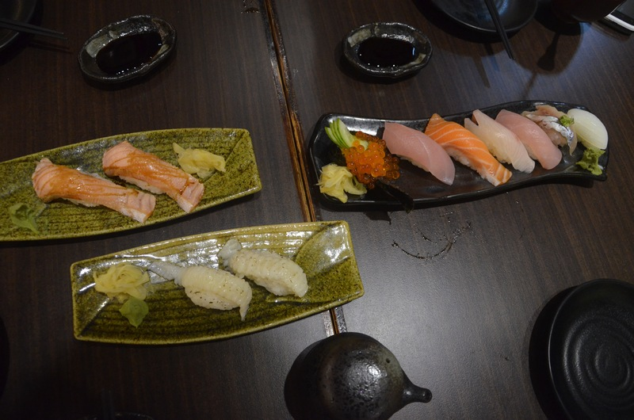

Od našeho návratu z Asie uplynuly už dva měsíce a já jsem s našim vyprávěním teprve někde v polovině, ostudné… Naposledy jsem skončila naši cestu v Tainanu, kde nás čekalo setkání s Mendy a s její mladší sestrou Luffy. Bylo hodně osvěžující setkat se zase po nějaké době s někým, kdo ovládá místní jazyk :D
Tainan je bývalé hlavní město ostrova a také nejstarší město na Taiwanu, kde stále vzkvétá tradiční kultura. Nachází se zde řada krásných starých chrámů a památek z dob, kdy byla tato oblast kolonizována Holanďany. A říká se, že i zdejší kuchyně je hodně specifická a odlišná od zbytku ostrova.

V Tainanu
Hned po snídani jsme se tedy vydali k nedalekému nádraží, kde jsme měli sraz s Mendy a Luffy. Jejich rodina nežije přímo v Tainanu, ale v menším městečku vzdáleném asi hodinu cesty. Mendy přiletěla na Taiwan teprve před pár dny - do té doby byla na návštěvě u svého přítele Juliena v Paříži. Teprve od ní jsme se dozvěděli o tom, co se děje v Evropě, když na naši otázku, jak bylo ve Francii, Mendy odpověděla: “Vy jste asi nečetli noviny, že?” V době útoků byl prý Julien dokonce na fotbalovém stadioně, který byl jedním z cílů sebevražedných atentátníků, naštěstí se mu nic nestalo…
Naše první společné kroky vedly do Národního muzea taiwanské literatury, které nám doporučila Luffy. Toto muzeum zdůrazňuje rozkvět taiwanské literatury od dob předchanských domorodců až do moderní doby a - jak nám ostatně potvrdil i náš průvodce od Lonely Planet - je velmi nezajímavé :-). Brzy jsme tedy pokračovali dále, do Konfuciova chrámu. Konfuciánské chrámy většinou vyzařují klid, vznešenost a důstojnou krásu tradiční čínské kultury a ani tento chrám (první svého druhu na Taiwanu) není výjimkou.

Konfuciův chrám
Další naší zastávkou se staly věže staré pevnosti Chihkan. Od té doby, co roku 1653 Holanďané položili základní kámen, přečkaly věže Chihkan mnoho vládců - dynastie Ming a Čching, Japonce i Kuomintang. V té době moře dosahovalo až k vnějším zdem pevnosti. Věže jsou obklopeny hezkým parčíkem s rybníkem plným zlatých rybek a zdejší zajímavostí jsou také kamenné želvy z období dynastie Čching.

Věže Chihkan
Další chrám, který jsme navštívili, byl zasvěcen (pro změnu :-) bohyni Ma-cu. Tento rušný chrám kdysi sloužil jako palác pro posledního krále dynastie Ming. Těsně před královou smrtí byl podle jeho posledního přání palác přetvořen na chrám bohyně Ma-cu, jejíž socha, kterou zde můžete spatřit, je stará 300 let!

Ma-cu
Tainan má prakticky dvě hlavní centra - to první jsme právě prošli, takže jsme se rozhodli vrátit se do hotelu pro auto a přemístit se k pobřeží do západního centra Taiwanu, které nese název Anping. Když Holanďané založili na Taiwanu svou kolonii, postavili první pevnost a komerční centrum právě zde.
A protože byl právě čas oběda, nechali jsme se holkama zavést na něco dobrého k snědku. Zakotvili jsme v příjemné a přeplněné restauraci, kde následovaly již tradiční hody: polévka s rybíma knedlíčkama, krevetové závitky a naše další gastro premiéra: ústřice O:-)!
Po dobrém obědě jsme opět pokračovali po památkách. Také Anping má svůj chrám zasvěcený bohyni Ma-cu - tento chrám je jedním z mnoha, o kterých se tvrdí, že jsou nejstarší na Taiwanu.

Naše znamení čínského zvěrokruhu :)
Jeho interiér je propracovaněji zdobený než interiéry většiny chrámů v centru Tainanu. Najdete tu bohatou výzdobu a hluboký ozdobný strop nad hlavní svatyní.

Patroni jednotlivých znamení
Nedaleko chrámu stojí také pevnost Anping, která byla v držení Holanďanů až do jejich kapitulace v roce 1661. Z velké části byla přestavěna, ale stále jde o velmi působivé místo. Malé muzeum ukazuje nejvýznamnější okamžiky z historie holandské okupace Taiwanu.
Zbytek odpoledne jsme strávili touláním starými uličkami Anpingu - vpravo od vchodu do pevnosti se totiž nachází jedny z nejstarších ulic na Taiwanu. Ty nejstarší domy poznáte podle kamenných lvích masek s meči přes tlamu, které kdysi měly za úkol chránit domy před ďábly.

Starobylé uličky Anpingu
Ochutnali jsme různé dobroty z pouličních stánků od zmrzliny ve tvaru vajíčka přes ústřicové chipsy a navečer jsme se autem přemístili do Xinjingu - Mendyina rodného města, kde nám zarezervovala hotel. Ještě než jsme si popřáli dobrou noc, holky nás vzaly na tradiční sushi do zdejší restaurace. To aby těch gastro zážitků pro dnešek nebylo málo :)!

Sushi!
Na druhý den jsme se s Mendy ještě domluvili na společnou snídani a dál se měla naše cesta ubírat opět do hor - do oblasti Alishan proslulé pěstováním čaje a překrásnými východy slunce.